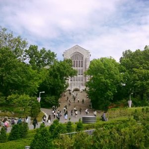

이화여자대학교
이화여자대학교(梨花女子大學校, Ewha Womans University, 문화어: 리화녀자대학교)는 대한민국의 사립 여자 대학교이다. 한국 최초의 종합대학교(문교부 제1호 종합대학교 인가)이다. 서울특별시 서대문구에 캠퍼스를 두고 있다. 주로 이대（梨大）라는 약칭으로 불린다.
이화대학이라는 교명은 1886년초 고종 황제가 대한민국 최초의 여성 교육의 시작을 기념하기 위해 당시 메리 스크랜턴 여사가 경영하던 여학교에 하사한 이화학당에서부터 시작되었다. 특히 이화라는 명칭은 1887년 고종황제가 칭호 하사 한 것으로 유명하다. 1904년에는 교복을 입게 되었고 대한민국 여성 고등교육의 효시이다.

- 인문과학대학 - 국문, 중문, 영문, 불문, 독문, 사학, 철학(이상 인문과학부), 기독(이상 기독교학부)(총 8개학과)
- 사회과학대학 - 정외, 행정, 경제, 문헌, 사회, 사회복지, 심리, 소비자(이상 사회과학부), 커뮤니케이션•미디어학(이상 커뮤니케이션•미디어 학부)(총 9개학과)
- 자연과학대학 - 수학, 통계, 물리(이상 수리물리통계과학부) 화학•나노과학, 생명과학(이상 화학생명분자과학부)(총 5개학과)
- 공과대학 - 컴퓨터공학, 사이버보안(이상 소프트웨어학부), 전기전자공학, 화학신소재공학, 식품공학(이상 차세대기술공학부) 건축학, 건축공학, 환경공학, 기후에너지시스템공학(이상 미래사회공학부), 휴먼기계바이오공학(단일학부) (총 10개학과)
표준 웹 기술
HTML
CSS
Javascript